01. Humanoid AI Character Pipeline
Project Description & Pipeline Study
This project explores the relationship between humanity and machine intelligence through the engineering of an original humanoid character. Inspired by the narrative themes of I, Robot (2004), the objective focused on executing an end-to-end production asset pipeline, managing complex character mechanics from initial design sketches through to animation-ready controls.
Technical Geometry & Structural Topology: Component parts were custom-modeled within Autodesk Maya using Sub-D modeling parameters to establish strict animation-ready edge loops and optimized topology across complex moving zones. To provide deep facial articulation, a custom-designed control rig was created alongside target blend shapes, facilitating detailed micro-expressions and synchronized dialogue sequences.
Material Development & Look Dev passes: Surface detailing was mapped out entirely using Substance Painter, building material variations across separate PBR channels. Advanced shader parameters utilized subsurface scattering (SSS) maps and custom surface roughness variations via the Arnold engine to simulate reflective composite alloys and translucent components.
Asset Delivery & Core Renders
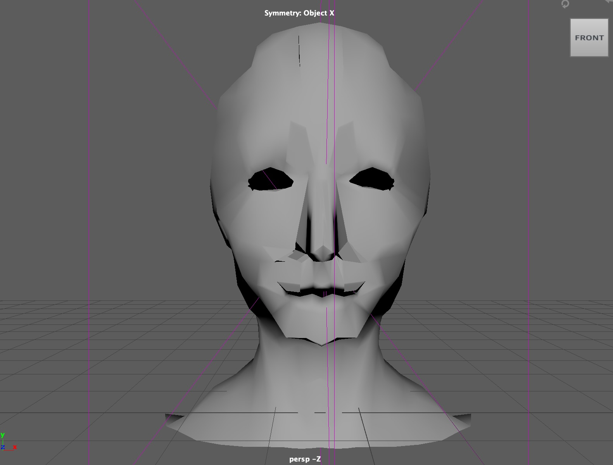
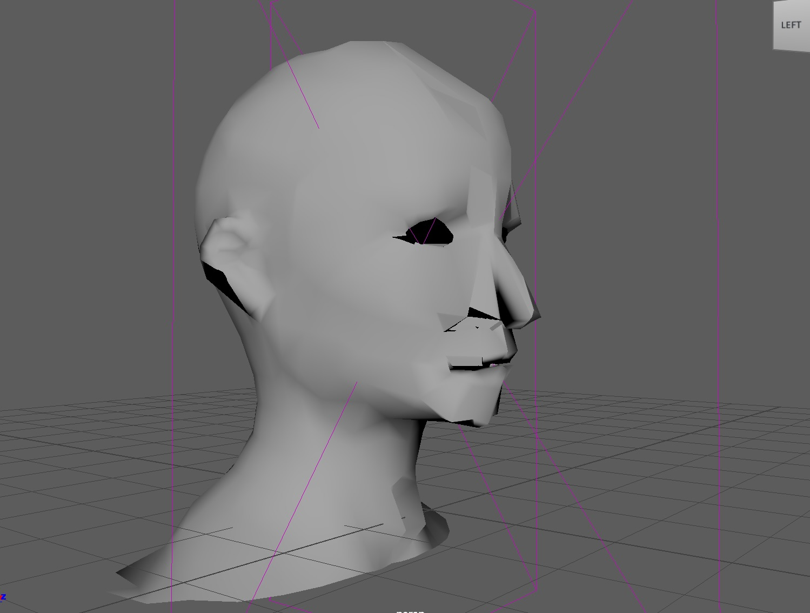
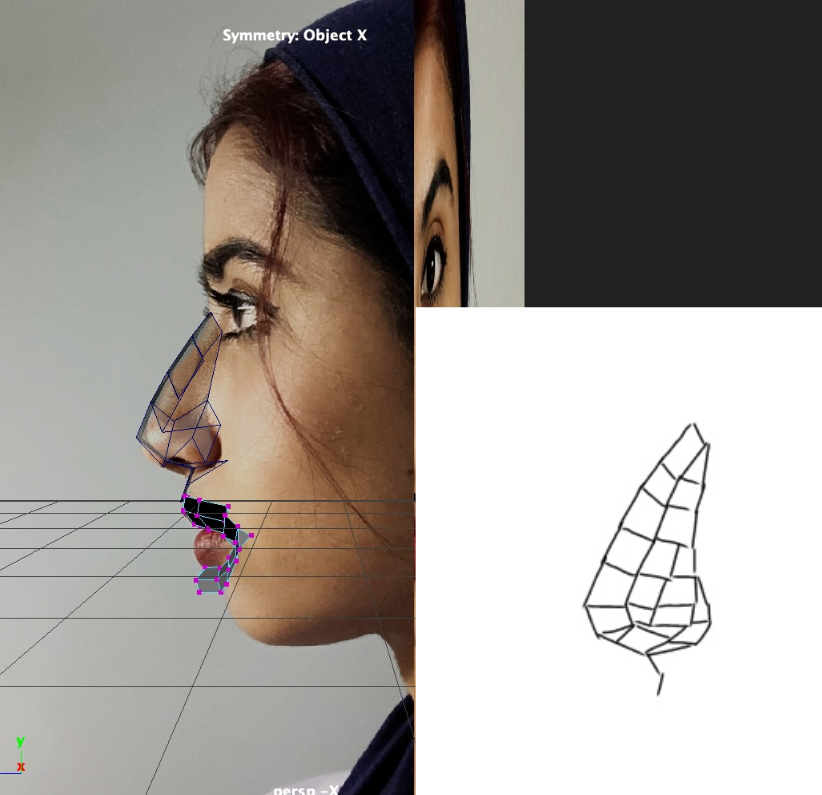
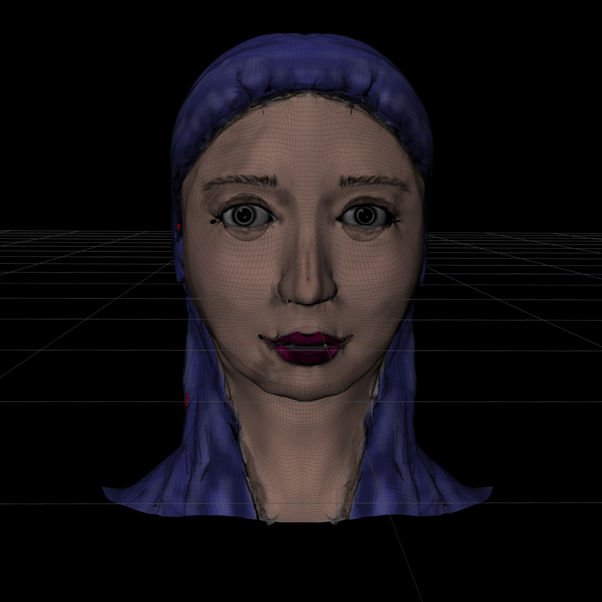
02. The Axis Chair
Industrial Design Project by Fatima Kazim
Design Philosophy & Shop Fabrication
The Axis Chair is an exploration into structural geometry, analyzing the conversion of linear planes into load-bearing human seating. The project breaks down continuous furniture volumes into an organized array of repetitive wooden slats, generating a rhythmic, deconstructed form while preserving physical stability.
Anthropometric Blueprints & Tolerances: Starting from initial scale prototypes, blueprints were developed to translate human clearance constraints into precise shop dimensions. To maintain a unified aesthetic across the horizontal and vertical planes, the layout used strict 2.5 cm structural gaps. The material parts list was configured down to the millimeter: processing structural profiles into primary 42 cm base support lengths, reinforced with 37 cm, 25 cm, and 23 cm structural support struts.
Assembly Workflows: Joining operations prioritised joint shear resilience; framework intersections were routed to use strong internal mechanical joints via a specialized Festool Domino system (N403 configuration) and high-torque DeWalt fabrication platforms to secure flush, structural timber assemblies.
The Axis Chair Fabrication Pipeline
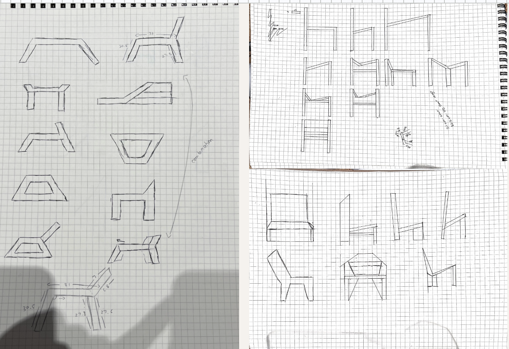
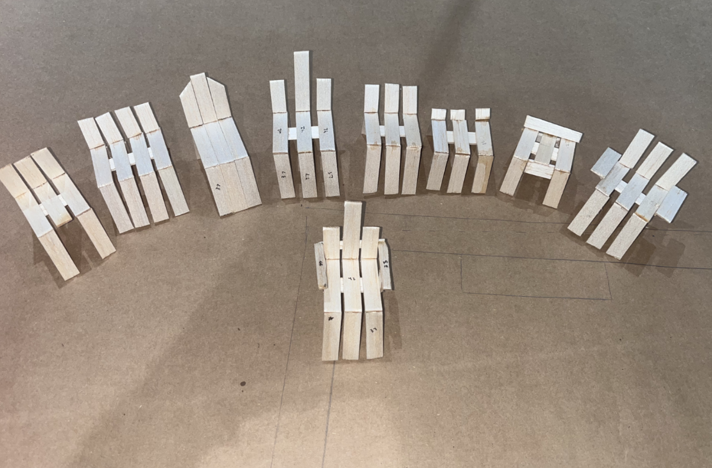
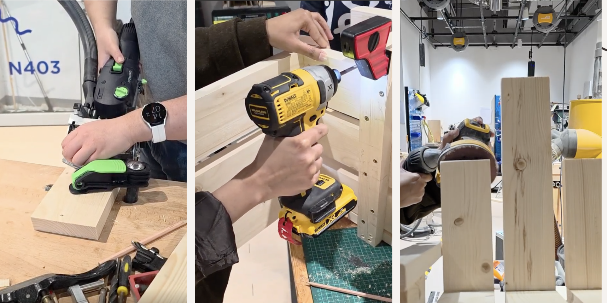
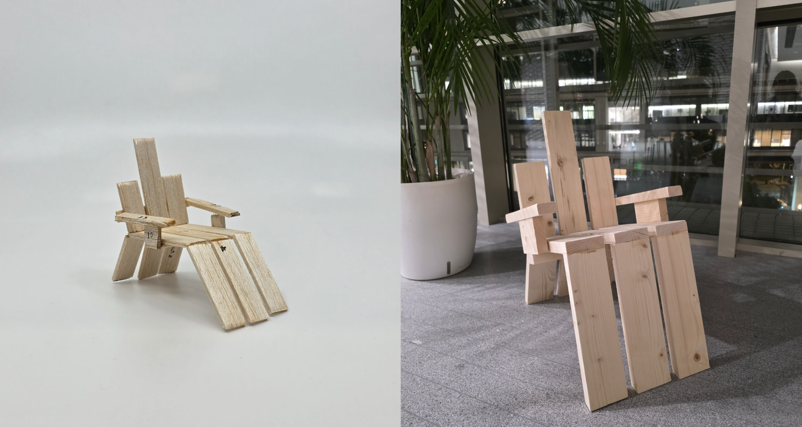
03. The Facet Chair
Independent Industrial Design Study by Fatima Kazim
Conceptual Framework & Parametric Assembly Workflow
The Facet Chair is a flat-pack furniture system built on the structural principles of Analytical Cubism. Moving away from traditional fluid curves, the seating structure breaks down functional volume into an array of intersecting angular planes, triangular structures, and multi-perspective flat facets that rise cleanly from a low-profile base substrate. This design bridges artistic sculpture with home commodities, transforming structural panels into elements that add to the visual flow and structural stability of the piece.
Parametric Modeling & Fabrication Toolpaths: Design requirements moved from early research mood boards and modular sketches into Autodesk Fusion 360. Solid and surface modeling tools were used to build the panel geometries and verify seating dimensions, recline angles, and center-of-gravity load metrics.
Rather than using secondary structural fasteners, mechanical design formulas were introduced to integrate precise, tight CNC interlocking joinery techniques straight into the sheet layouts. Nesting blueprints were prepared, optimized, and output as laser vectors, with multiple low-scale fabrication models built to verify interface tolerances before processing final sheet stock.
The Facet Chair Engineering Pipeline
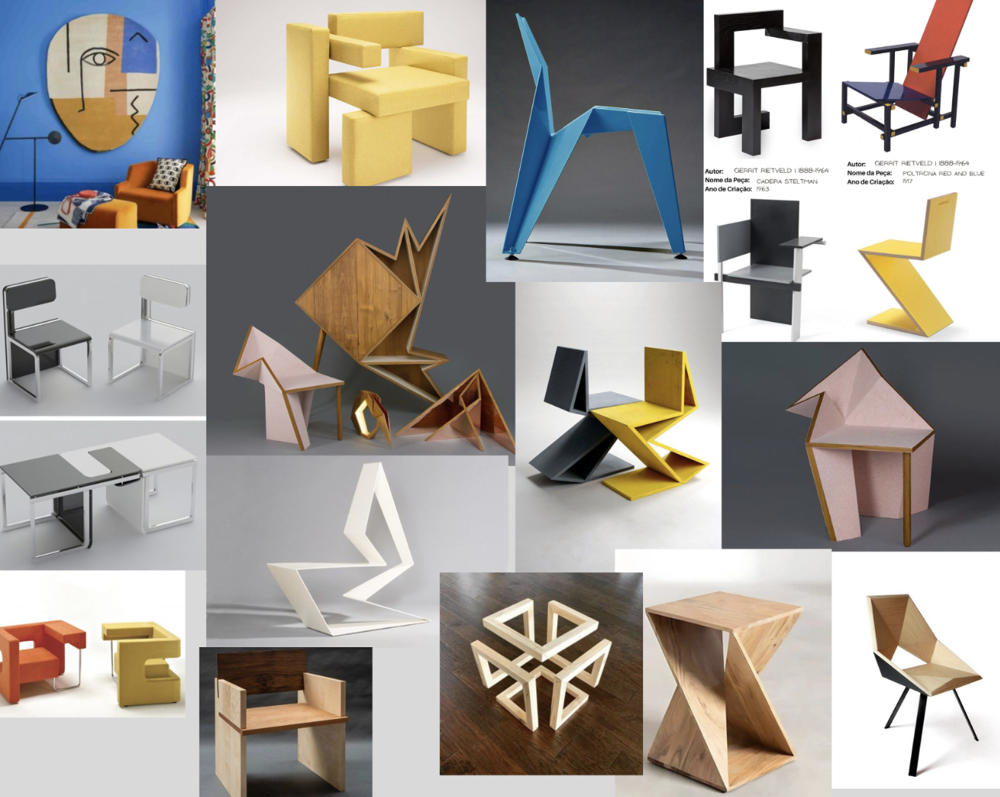
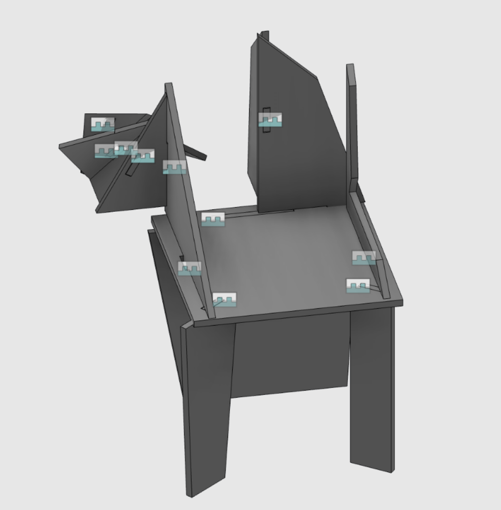
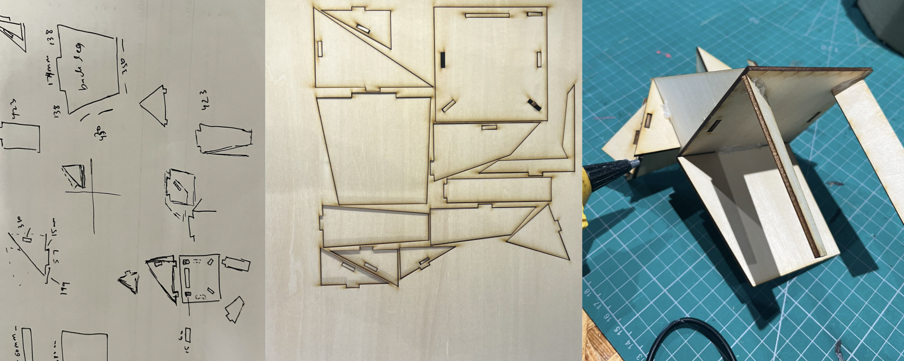
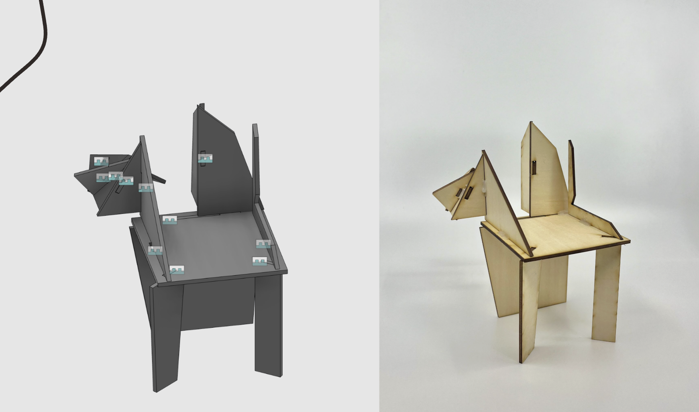